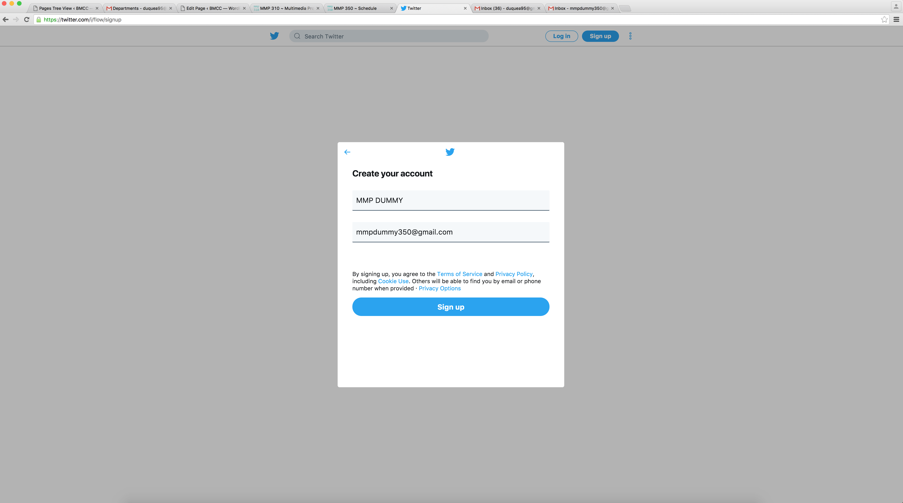

Twitter's User Registration and Online Interaction
Twitter's home page will ask the user to sign in or login in order to use the site.

The user is prompted to register with their name and email or phone number

The user must verify their registration
The user must create a passowrd

The user has the option of adding a profile photo now or later

The user is asked to update their bio
Twitter will ask the user for their preferences to influence what kind of tweets or accounts are shown
Twitter will recommend accounts for you to follow to help you get started

The user is now able to update more information on their profile

The user's past tweets can be found on their profile.
The user is interacting with Kobe Bryant by tweeting him.